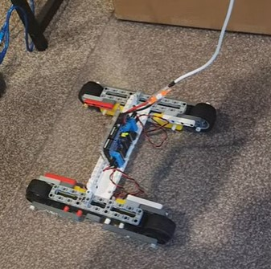
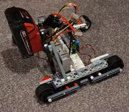
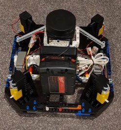
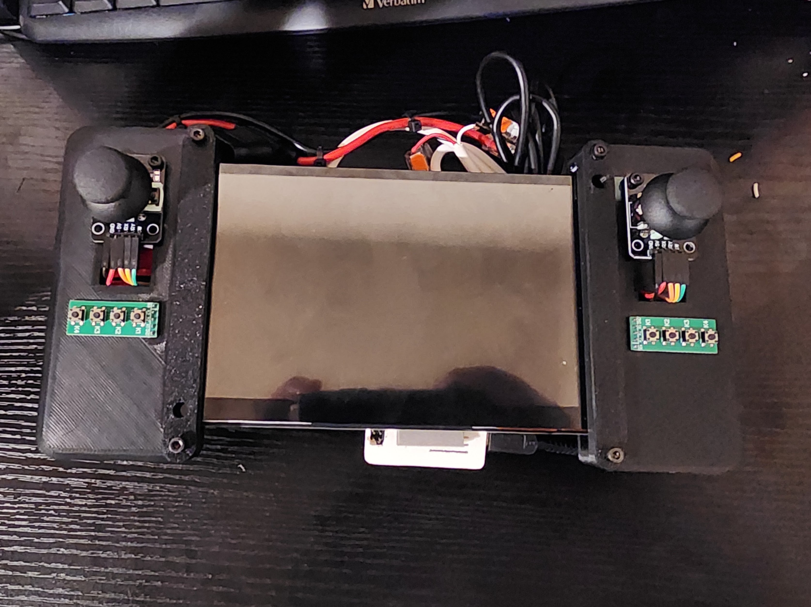
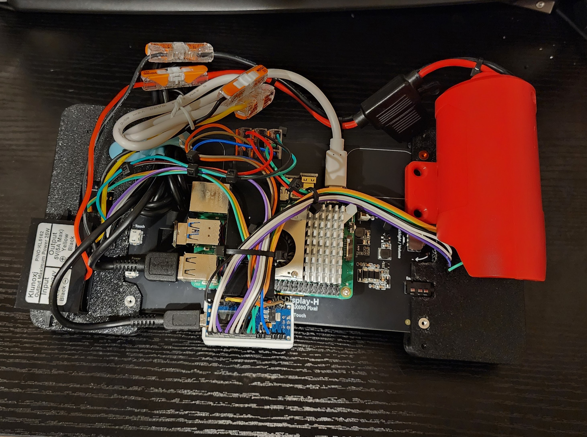
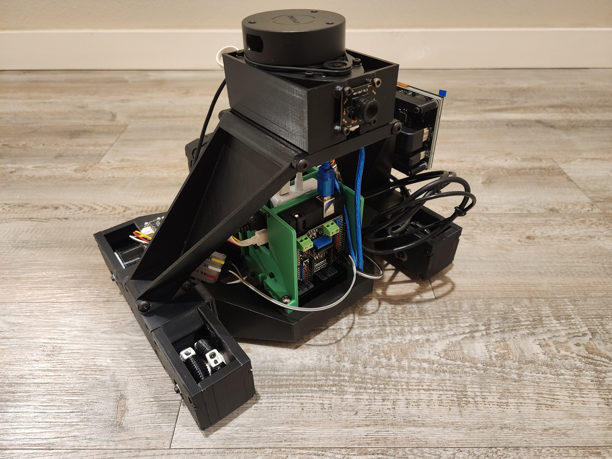
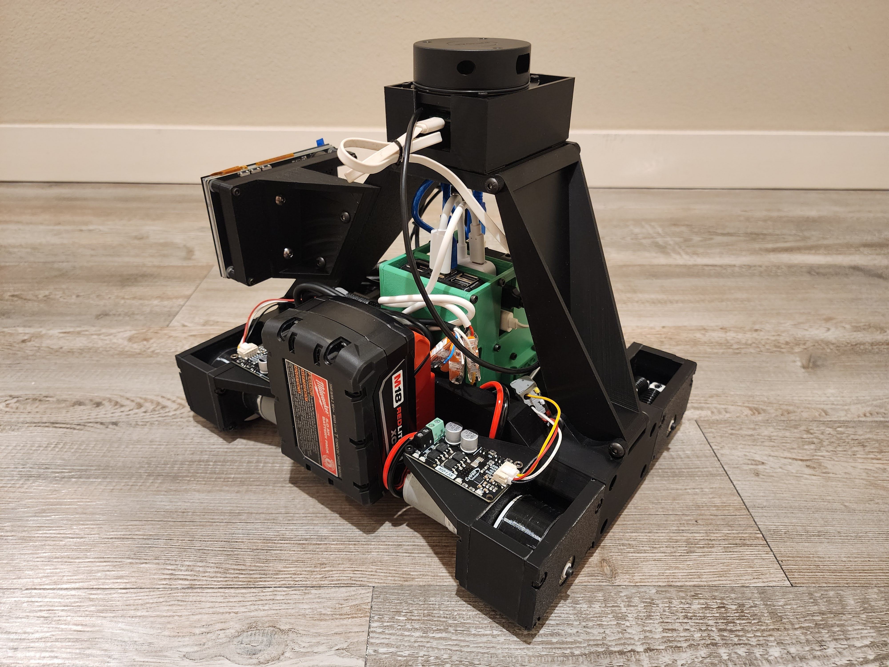
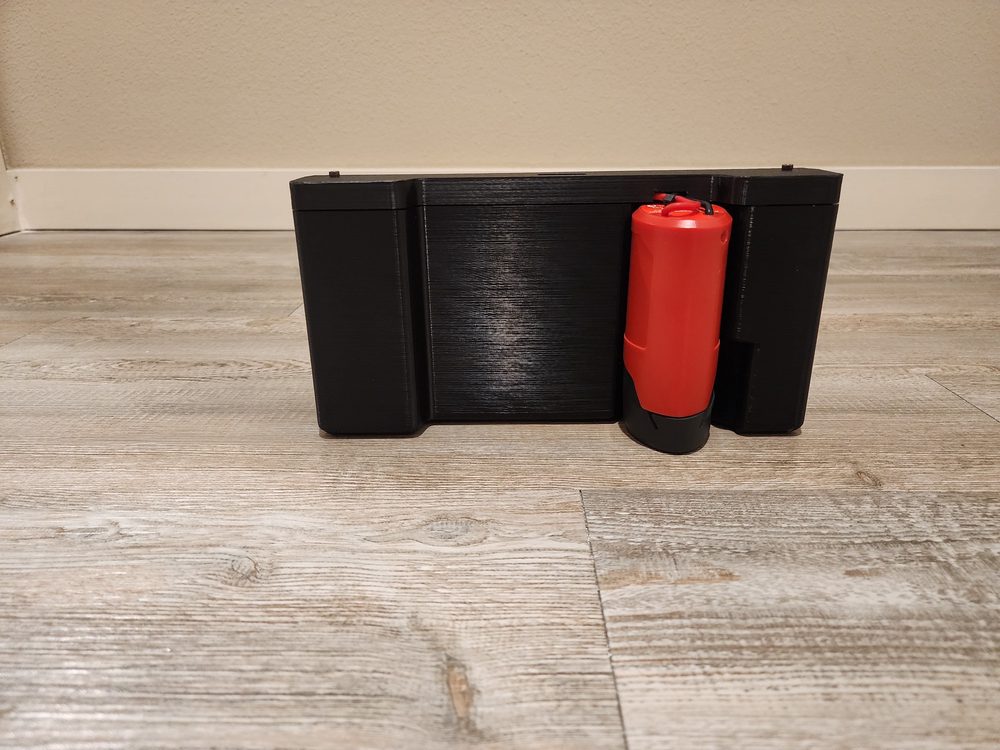

This robot is a personal development platform for learning ROS2 through hands-on experimentation with sensors, motion planning, and custom control systems.
Powered by a Milwaukee M18 battery, it integrates LiDAR, Raspberry Pi, Arduino Uno, and a custom controller. The system was designed without a final use-case in mind and that became part of the challenge.
System Overview
- ROS2 Jazzy running on Raspberry Pi
- Arduino handles low-level PWM control
- LiDAR for obstacle detection
- M18 + M12 batteries power robot and controller
- Touchscreen + joystick interface via secondary Pi
Why?
This was first brought up because of a game release video for a competitive robotics league known as Rival Robotics. The video made me feel like I was back in my competitive robotics years and gave me enough motivation to make a robot. The league allowed any hardware and any age.
Initial Design
The Body
With very little experience in electronics beyond VEX, I set out to find the key components for my design. Since I did not know what kind of overall design I wanted, I searched for items that could be used for prototyping. I settled on using Lego Technic sets. For controllers, I had various arduino unos laying around and decided to stick with raspberry pis since I worked with them on my 3d printers. TT motors were purchased from Amazon. I had seen various videos on Youtube about home made mobile robots that used drill batteries as a power source.
Before including a raspberry pi, the robot was constructed with lego technic, tt motors, an arduino, and a L293D motor shield from HiLetgo. Power came from a 5V power supply, spliced into power and ground leads into the shield.
With more legos, I was able to include voltage converters and a Milwaukee M18 2AH battery.
Since the drivetrain was able to move without being tethered to the wall, the body was reborn into a holonomic drivetrain. The omni wheels are remixed from "52mm Omni Wheel" by Armstrong_Manufacturing on Thingiverse. The motors were placed above the wheels, and power was driven 1:1 with 3d printed gears. The omni wheels and motors were placed together in a 3D printed pods. Moreover, an RPLIDAR A1M8 was added with a raspberry pi 5.
The raspberry pi 5 was used to run ROS2 on Ubuntu 24.04. The pi and the arduino were attached via a USB cable and communicated through serial. The arduino directly interfaces with the motors while the raspberry pi can focus on other processes. Eventually, the arduino will interface with other sensors or actuators.
The controller 
Like the body, the controller consisted of an arduino uno and a raspberry pi 5. The controller also consisted of two analog thumbsticks and two arrays of 4 push buttons. The thumbsticks and buttons were connected directly to the arduino uno. The pi and the arduino were attached via a USB cable and communicated through serial. The arduino directly interfaces with the thumbsticks and push buttons since the Pi lacks a built-in ADC.
And now ... How ROS2 fits in this project
ROS2 is used for cross communication between the raspberry pis on the body and controller. They both run the ROS2 Jazzy distribution. The controller_node on the controller reads data that the arduino provides via serial. The controller then publishes the information to the /body/input topic. The robot subscribes to the /body/input topic. The data is then parsed and sent to the arduino via serial.
Issues With the Initial Design
There were a few problems with the robot and controller that did not necessarily need to get resolved but would help get things moving. The following are problems with the robot.- TT motors created movement but were very slow or sometimes non-existent unless the arduino commanded full speed
- Legos created a very mechanically flexible and brittle base
- The wheels ran on lego shafts, causing friction
- The raspberry pi could not power all devices on it's own
- using SSH to learn directly on the robot can be difficult
- Greartisan 500RPM DC motors will be used to move the drivebase
- The chassis will be 3D printed in an effort to reduce the part count
- The wheels will only contact the robot through ball bearings
- Items will be powered via a USB hub unless a direct connection is needed
- a small screen will be added to view terminals, gazebo, and rviz
- there are many wires that can snag on items while in use
- unused pins and contacts are in the open and could cause shorts
- all components are attached to the controller with double sided tape
- it is hard to prop up the controller to view the screen
- An enclosure will be used to cover up wires and open contacts
- Whenever possible, small electronics will have their own enclosure so that items have a harder time causing shorts
- all components will be mounted onto a base part
- the enclosure will include a flat surface on the bottom
While the TT motors were good in getting an initial concept going, they were not good for the use case of this robot. The movement was slow if any. The greartisan DC motors are much stronger and are paired up with MDD13S DC motor controllers. Since the motor controllers can pull up to 13A and control an individual motor, The motor count was reduced to two. This meant that the holonomic drivetrain was replaced with a skid steer drivetrain. While this goes against the initial concept of the robot for the game, this will allow myself to use this to learn ROS2 on.
The legos had so many connection points that even the slightest movement across many connections can cause the robot to sag. The 3d printed chassis aimed to reduce the connection points, thus removing much of the slight movements. Moreover, this also meant that all components would have to be fixed in place. This aids components like the battery and LiDAR as the battery would not cause flexing, and movments would not cause the lidar to vibrate in place. This trade off is taken with the idea that this chassis would be used for learning.
The wheels are 3d printed and originally ran on lego shafts which caused friction while moving. With the eventual goal of increasing weight on the robot by adding more actuators, the wheels are to be designed to spin on bearings. This was done by creating an extrusion on the ends of the wheels that would fit perfectly inside of bearings. The extrusion is printed vertically using an FDM 3D printer which would make the layer lines the weakest part under load. A screw threading on both sides of the wheel prevents shear forces due to the robot weight from destroying the wheel.
The raspberry pi had to communicate with the arduino uno, lidar, camera, and screen. The pi can not supply enough current to all devices at once. A usb hub is added to supply power to devices while allowing communication with the Raspberry Pi. The arduino receives power and communication directly from the Raspberry Pi 5. All other devices go through the usb hub.

When using the controller on a workbench, items such as screwdrivers or table corners can catch on wires and unplug them or even cause a quick short. These weaknesses are addressed by creating cable management locations and a cover. This also prevents fingers from touching contacts, wires, or other electrical components. The arduino nano will receive power and communication through its usb port with the raspberry pi. All other components are bolted on or ziptied to the controller base part. The outer enclosure not only provides protections to parts on the inside, it also provides a clean and flat surface that can be used to prop up the controller.


Getting things moving with cmd_vel
One thing that makes ROS2 great for development is its standardization and modularity. To take full advantage of this, the nodes running on the controller and robot were rewritten to send and receive commands via the cmd_vel topic. This will allow me to use the same controller to tele-operate other robots with the same inputs. This also allows me to use community packages for autonomous movement of the robot.
I created a function that took the joystick inputs and parsed it for use in /cmd_vel topic. The function was made to contain the conversion code and clean up the function that reads serial data.
def joystick_to_cmd_vel(self, i):
# define limits
max_linear = 1.36 # m/s
max_angular = 10.7 # rad/s
min_stick = 0
max_stick = 1024
# Convert input strings to floats
i = list(map(float, i))
# Adjust center
i[0] -= (min_stick + max_stick) / 2 # rotation
i[1] -= (min_stick + max_stick) / 2 # forward/backward
# Scale
angular_z = (i[0] / ((max_stick - min_stick) / 2)) * max_angular
linear_x = (i[1] / ((max_stick - min_stick) / 2)) * max_linear
return [angular_z, linear_x]
Similarly, I created a function that took the /cmd_vel topic and converted it into motor commands to the arduino. This function previously took inputs i and j, where they represented the raw inputs from the joysticks. The mixing was the summation or subtraction of the two sticks being applied to each individual wheel. While the robot moves based on joystick inputs, this new function has not been completely verified that the robot moves at the commanded speeds.
def cmd_vel_to_motors(self, i): # assign values linear_x = i.linear.x angular_z = i.angular.z max_linear = 1.36 max_angular = 10.7 #scaling forward = (linear_x/max_linear) * 512 rotation = (angular_z/max_angular) * 512 # Mixing for skidsteer rightMotor = forward - rotation leftMotor = forward + rotation motors = [rightMotor, leftMotor, 0, 0] # Re-center to 0–1023 for Arduino, then clip return [int(max(0, min(1023, m + 512))) for m in motors]